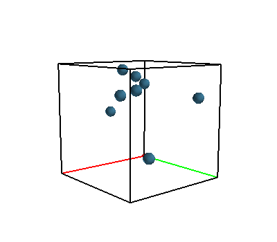

Elastik Çarpışma (Elastic Collision)
\(m_1,m_2\) kütlesine sahip \(v_1,v_2\) hızında iki küre arasında mükemmel bir elastik çarpışma olduğunu düşünelim, yani çarpışma öncesi ve sonrası enerji kaybı yok, bu durumda, sistemin toplam momentumu da önce ve sonra aynı olacaktır,
\[ m_1 \vec{v}_1 + m_2 \vec{v}_2 = m_1 \vec{v}_1' + m_2 \vec{v}_2' \]
ki \(\vec{v}_1,\vec{v}_2,\vec{v}_1',\vec{v}_2'\) hız vektörleri, \(\vec{v}_1',\vec{v}_2'\) çarpışma sonrası hız vektörleri.
Eğer momentum muhafaza ediliyorsa, birinci topun kaybettiği ya da kazandığı momentum ikinci topa eklenecek ya da ondan çıkartılacaktır.
\[ m_1 \vec{v}_1 = m_1 \vec{v}_1' - \Delta \vec{p} \]
\[ m_2 \vec{v}_2 = m_2 \vec{v}_2' + \Delta \vec{p} \]
Üstteki idealize ortamda momentum transferi sadece çarpışma çizgisi üzerinde olabilir, bu çizgi, ya da vektör yönü eğer iki topun arasında teğet bir düzlem düşünsek ona dik olan bir vektör olacaktır, ona \(n\) diyelim. O zaman, ve \(p\) vektörünün büyüklüğünü \(P\) ile gösterirsek,
\[ \vec{v}_1' = \vec{v}_1 - (P / m_1) \vec{n} \qquad (1) \]
\[ \vec{v}_2' = \vec{v}_2 + (P / m_2) \vec{n} \qquad (2) \]
Eğer \(P\) skalar büyüklüğünü bulabilirsek, çarpışma sonrası yeni hızı elde edebiliriz.
Üstteki resme bakınca görüyoruz ki \(v_1\) ve \(v_2\) her biri iki tane ayrı vektörün toplamı olarak temsil edilebilir, bu vektörlerden biri çarpışma, momentum transfer çizgisine dik, diğeri ona paralel. Bu bilgi ile, \(v_1,v_1',v_2,v_2'\) şöyle temsil edilebilir,
\[ \vec{v}_1 = a_1 \vec{n} + b_1 \vec{q}, \qquad \vec{v}_2 = a_2 \vec{n} + b_2 \vec{q} \qquad (3) \]
\[ \vec{v}_1' = a_1' \vec{n} + b_1' \vec{q}, \qquad v_2' = a_2' \vec{n} + b_2' \vec{q} \qquad (4) \]
\(a_1,a_2,b_1,b_2\) tek sayı değerleridir.
\[ v_1' = a_1 \vec{n} + b_1 \vec{q} - (P/m_1) \vec{n} \]
\[ = (a_1 - p/m_1) \vec{n} + b_1 \vec{q} \]
\[ v_2' = a_2 \vec{n} + b_2 \vec{q} + (P/m_2) \vec{n} \]
\[ = (a_2 + P/m_2) \vec{n} + b_2 \vec{q} \]
Ve tabii ki form olarak \(\vec{v}_1' = a_1' \vec{n} + b_1' \vec{q}\), ve \(\vec{v}_2' = a_2' \vec{n} + b_2' \vec{q}\) olduğunu biliyoruz, o zaman birbirine tekabül eden kısımlara bakarak
\[ a_1' = a_1 - (P/m_1), \qquad b_1' = b_1 \qquad (5) \]
\[ a_2' = a_2 + (P/m_2), \qquad b_2' = b_2 \qquad (6) \]
Şimdi \(P\) tek sayı değerini bulmak için enerji muhafazası formülünü kullanabiliriz. Tek boyutta \(1/2 m v^2\) şeklinde olan formülü \(\frac{1}{2} m \cdot \vec{v}\cdot\vec{v}\) olarak değiştirmek lazım. Ya da \(\frac{1}{2} m <\vec{v},\vec{v}>\), ya da \(\frac{1}{2} m ||v||^2\). O zaman
\[ \frac{m_1}{2} ||v_1||^2 + \frac{m_2}{2} ||v_2||^2 = \frac{m_1}{2} ||v_1'||^2 + \frac{m_2}{2} ||v_2'||^2 \]
\(||v_1||^2\) ve \(||v_1'||^2\), vs hesabının kolay bir yolu var, eğer üstteki resme bakarsak mesela \(||v_1||\) büyüklüğü kenarları \(a_1\) ve \(b_1\) olan bir üçgenin hipotenüsü olarak görülebilir.
\[ \frac{m_1}{2} (a_1^2+b_1^2) + \frac{m_2}{2} (a_2^2+b_2^2) = \frac{m_1}{2} (a_1'^2+b_1'^2) + \frac{m_2}{2} (a_2'^2+b_2'^2) \]
Daha önce bulduğumuz (5),(6) değerlerini üstteki formüle sokunca,
\[ \frac{m_1}{2} (a_1^2+b_1^2) + \frac{m_2}{2} (a_2^2+b_2^2) = \frac{m_1}{2} \left( \left(a_1-\frac{P}{m_1} \right)^2 + b_1^2 \right) + \frac{m_2}{2} \left( \left(a_2-\frac{P}{m_1} \right)^2 + b_2^2 \right) \]
\(b_1^2\) ve \(b_2^2\) iptal olur. Her şeyi \(P\) sol tarafta olacak şekilde tekrar düzenlersek,
\[ P = \frac{2 m_1 m_2 (a_1-a_2)}{m_1+m_2} \]
Bu degeri (1) ve (2)'ye sokarsak,
\[ \vec{v}_1' = \vec{v}_1 - \frac{2 m_2 (a_1-a_2)}{m_1+m_2} \vec{n} \]
\[ \vec{v}_2' = \vec{v}_2 + \frac{2 m_1 (a_1-a_2)}{m_1+m_2} \vec{n} \]
Üstteki formülü değişik kaynaklarda, mesela [3], biraz farklı formda görüyoruz, mesela
\[ \vec{v}_1' = \vec{v}_1 - \frac{2m_2}{m_1+m_2} \frac{< \vec{v}_1-\vec{v}_2, \vec{x}_1-\vec{x}_2 >}{||\vec{x}_1-\vec{x}_2||^2} (\vec{x}_1-\vec{x}_2) \]
\[ \vec{v}_2' = \vec{v}_2 - \frac{2m_1}{m_1+m_2} \frac{< \vec{v}_2-\vec{v}_1, \vec{x}_2-\vec{x}_1 >}{||\vec{x}_2-\vec{x}_1||^2} (\vec{x}_1-\vec{x}_2) \]
Fakat biraz dikkat edilince mesela \(a_1-a_2\)'nin \(\vec{n}\) yönündeki hız farkı olduğunu görürüz, yani
\[ a_1-a_2=\frac{< \vec{v}_1-\vec{v}_2,\vec{x}_1-\vec{x}_2 >}{||\vec{x}_1-\vec{x}_2||} \]
Geri kalanlardan zaten \(\vec{n} = \vec{x}_1-\vec{x}_2/||\vec{x}_1-\vec{x}_2||\) ve \(m_1,m_2\) değerleri de aynı şekilde iki tarafta uyar.
İki kütlenin eşit olduğu durumlarda (ki moleküler simülasyonlarda bu çok rahat kabul edilebilir), formül daha da basitleşir [4],
\[ v_1' = v_1 - \left( (v_1-v_2) \cdot \vec{n} \right) \vec{n} \]
\[ v_2' = v_2 - \left( (v_2-v_1) \cdot \vec{n} \right) \vec{n} \]
ki \(\vec{n} = \frac{x_1-x_2}{|x_1-x_2|}\)
Basınç (Pressure) ve Parçacık Çarpışması
Bir sıvı içinde duran bir objeye tek uygulanan etki, stres onu sıkıştıran türden bir etkidir. Diğer bir deyişle bir sıvı içindeki objenin hissettiği kuvvet onun yüzeyine her zaman diktir.
Bir sıvının içindeki objeye uyguladığı basıncı, o objeye uygulanan birim alanda uygulanan kuvvet olarak temsil edilebiliriz, kuvvet \(F\) ve alan \(A\) ise,
\[ P \equiv \frac{F}{A} \]
Eğer belli bir noktadan bahsetmek istersek, diyelim \(dA\) sonsuz ufaklıktaki bir alana uygulanan \(dF\) kuvveti,
\[ P = \frac{dF}{dA} \]
O zaman belli bir alandaki basınç için o alan üzerinden entegral almak gerekir.
Basıncın birimi \(N / m^2\), şaşırtıcı olmasa gerek, kuvvet birimi Newton, ve alan birimi \(m^2\).
Simulasyon
Önce basit bir simülasyon kodlayalım. Bazı toplar var, onları başta bir kuvvetle rasgele yönlere iteceğiz ve ne yapacaklarına bakacağız. Fiziksel parametreler şöyle, yerçekimi sabiti \(g = 0.8\) (dünyadan daha az), topların birbirine ya da duvara çarpması sonucu hiç enerji kaybı olmuyor.
Bu tür bir sistemin konumu, o anki hali her parçacık için bazı değişkenlerin takip edilmesiyle olacak, bu değişkenler pozisyon, hız, kuvvet. Kütle her parçacık için aynı olacak.
Parçacık hareketi o parçacık üzerinde uygulanan kuvvet ile belirlenir, Newton denklemi \(m \bar{a} = \bar{f}\), ki ivme ve kuvvet çok boyutlu dikkat edelim, o sebeple vektör notasyonu olarak üstte çizgi kullandık. Peki ivmeden, hiza ve yer değişikliğine nasıl gideriz? Newton formülünü bir ODE olarak tekrar düzenlersek onu ileri doğru entegre edebiliriz. Yer \(\bar{x}\), hız \(\bar{v}\) olmak üzere [9,10] ve her \(i\) parçacığı için,
\[ \dot{\bar{v}}_i = \bar{f}_i / m_i \]
\[ \dot{\bar{x}}_i = \bar{v}_i \]
Bu tür bir sistemi entegre etmek için Euler'in metotu kullanılabilir [5, sf 5], her \(n\) anında bir sonraki \(n+1\) değeri için
\[ \bar{x}^{n+1} = \bar{x}^n + h \bar{v}^n \]
\[ \bar{v}^{n+1} = \bar{v}^n + h \bar{a}^n \]
ki \(h\) ufak zaman aralığı olarak alınır, bir diğer isim \(\Delta t\) olabilir, alttaki kodda dt . O zaman her zaman diliminde her parçacığa etki eden kuvvetler toplanır, bir nihai kuvvet vektörü elde edilir. Ardından üstteki formüllerle sistem her parçacık için entegre edilir ve bir sonraki sistem durumu elde edilir.
Bu ilk sistemde bazı basitleştirmeler var; kuvvet uygulanma ve onun hıza dönüşmesine her koşulda bakmıyoruz, duvarlar ve parçacıklar arası etkileri direk hız üzerinde uyguluyoruz. Topların birbirine çarpma sonucu hız vektörlerinin hesabı [8]'te.
Kodlama notu, çarpışma hesabı için her parçacığın diğer parçacığa yakınlık kontrolü pahalı olursa, daha fazla parçacık için mesela, bunun için böleç tekniği kullanılabilir [7].
Genel grafik yöntemi şurada [1] işlendi.
# convert -scale 30% /tmp/sim/*.png /tmp/balls6.gif
from random import random
from collections import defaultdict
import numpy as np, datetime
import sys, numpy.linalg as lin
from mayavi import mlab
G = np.array([0.0, 0.0, -0.8])
m = 0.1
B = 8 # top
EPS = 0.1
BOUND_DAMPING = -0.6
class Simulation:
def __init__(self):
self.r = 0.2
self.rvec = np.ones(B) * self.r
self.dt = 0.1
self.balls = []
self.cor = 0.5
self.mmax = 2.0-self.r
self.mmin = 0.0+self.r
def init(self):
for b in range(B):
v = np.array([0.0, 0.0, 0.0])
p = np.array([np.random.rand(), np.random.rand(), np.random.rand()])
f = 5*np.array([np.random.rand(), np.random.rand(), np.random.rand()])
self.balls.append({'x':p, 'f':f, 'v': v, 'i': b})
def computeForces(self, i):
if (i==0):
for j,b in enumerate(self.balls):
b['f'] = b['f'] + (G * m)
else:
for b in self.balls:
b['f'] = G * m
def integrate(self):
for j,p in enumerate(self.balls):
p['v'] += self.dt*(p['f']/m)
p['x'] += self.dt*p['v']
if p['x'][0]-EPS < 0:
p['v'][0] *= BOUND_DAMPING
p['x'][0] = 0
if p['x'][0]+EPS > 2.0:
p['v'][0] *= BOUND_DAMPING
p['x'][0] = 2.0-EPS
if p['x'][1]-EPS < 0:
p['v'][1] *= BOUND_DAMPING
p['x'][1] = 0
if p['x'][1]+EPS > 2.0:
p['v'][1] *= BOUND_DAMPING
p['x'][1] = 2.0-EPS
if p['x'][2]-EPS < 0:
p['v'][2] *= BOUND_DAMPING
p['x'][2] = 0
if p['x'][2]+EPS > 2.0:
p['v'][2] *= BOUND_DAMPING
p['x'][2] = 2.0-EPS
vDone = {}
for j,b in enumerate(self.balls):
for other in self.balls:
if (other['i'] != b['i'] and b['i'] not in vDone and other['i'] not in vDone):
dist = lin.norm(other['x']-b['x'])
if (dist < (2*self.r)):
#print ('collision')
vrel = b['v']-other['v']
n = (other['x']-b['x']) / dist
vnorm = np.dot(vrel,n)*n
#print (vnorm)
b['v'] = b['v'] - vnorm
other['v'] = other['v'] + vnorm
vDone[b['i']] = 1
vDone[other['i']] = 1
def update(self,i):
self.computeForces(i)
self.integrate()
def display(self, i):
mlab.options.offscreen = True
ball_vect = [[b['x'][0],b['x'][1],b['x'][2]] for b in self.balls]
ball_vect = np.array(ball_vect)
fig = mlab.figure(figure=None, fgcolor=(0., 0., 0.), bgcolor=(1, 1, 1), engine=None)
color=(0.2, 0.4, 0.5)
mlab.points3d(ball_vect[:,0], ball_vect[:,1], ball_vect[:,2], self.rvec, color=color, colormap = 'gnuplot', scale_factor=1, figure=fig)
mlab.points3d(0, 0, 0, 0.1, color=(1,0,0), scale_factor=1.0)
BS = 2.0
mlab.plot3d([0.0,0.0],[0.0, 0.0],[0.0, BS], color=(0,0,0), tube_radius=None, figure=fig)
mlab.plot3d([0.0,BS],[0.0, 0.0],[0.0, 0.0], color=(1,0,0), tube_radius=None, figure=fig)
mlab.plot3d([0.0,0.0],[0.0, BS],[0.0, 0.0], color=(0,1,0), tube_radius=None, figure=fig)
mlab.plot3d([0.0,0.0],[0.0, BS],[BS, BS], color=(0,0,0), tube_radius=None, figure=fig)
mlab.plot3d([0.0,BS],[0.0,0.0],[BS,BS], color=(0,0,0), tube_radius=None, figure=fig)
mlab.plot3d([BS,BS],[0.0,BS],[BS,BS], color=(0,0,0), tube_radius=None, figure=fig)
mlab.plot3d([BS,0],[BS,BS],[BS,BS], color=(0,0,0), tube_radius=None, figure=fig)
mlab.plot3d([0,0],[BS,BS],[BS,0], color=(0,0,0), tube_radius=None, figure=fig)
mlab.plot3d([BS,BS],[0.0,0.0],[0.0,BS], color=(0,0,0), tube_radius=None, figure=fig)
mlab.plot3d([BS,BS],[0.0,BS],[0.0,0.0], color=(0,0,0), tube_radius=None, figure=fig)
mlab.plot3d([BS,0.0],[BS,BS],[0.0,0.0], color=(0,0,0), tube_radius=None, figure=fig)
mlab.plot3d([BS,BS],[BS,BS],[0.0,BS], color=(0,0,0), tube_radius=None, figure=fig)
mlab.view(azimuth=50, elevation=80, focalpoint=[1, 1, 1], distance=8.0, figure=fig)
mlab.savefig(filename='/tmp/sim/out-%02d.png' % i)
#exit()
if __name__ == '__main__':
s = Simulation()
s.init()
for i in range(40):
s.update(i)
s.display(i)
#exit() 
Tüm resimleri birleştirirsek,
! convert -scale 30% /tmp/glutout-*.png /tmp/balls1.gifSonuç [2]'de görülebilir.
Kaynaklar
[1] Bayramlı, OpenGL, PyOpenGL, https://burakbayramli.github.io/dersblog/sk/2020/08/pyopengl.html
[2] Bayramlı, Simulasyon 1 Animasyon, https://www.dropbox.com/scl/fi/0hfn6b7wltqfs9hf68uxv/balls1.gif?rlkey=m6atp3r1mx89v10u0adcum4wx&st=e4uvvrv1&raw=1
[3] Wikipedia, Elastic collision, https://en.wikipedia.org/wiki/Elastic_collision
[4] Masson, Elastic Collisions in 3D, https://exploratoria.github.io/exhibits/mechanics/elastic-collisions-in-3d/index.html
[6] Levi, Classical Mechanics with Calculus of Variations and Optimal Control
[7] Bayramlı, Bilgisayar Bilim, Geometrik Anahtarlama (Spatial Hashing) ve Izgara (Grid) ile En Yakın Noktaları Bulmak
[8] Bayramlı, Fizik, Temel Fizik 2, Dönüşler, Basınç, Çarpışma
[9] Müller, Fluid Simulation SIGGRAPH 2007 Course Notes,
[10] Visual Interactive Simulation (Spring 15), https://www8.cs.umu.se/kurser/5DV058/VT15/
{kind=link}